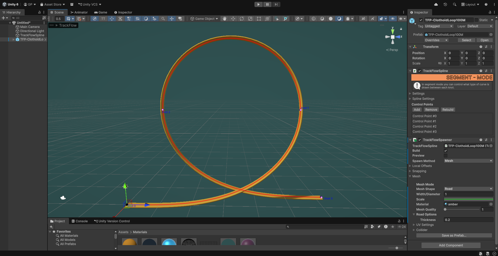
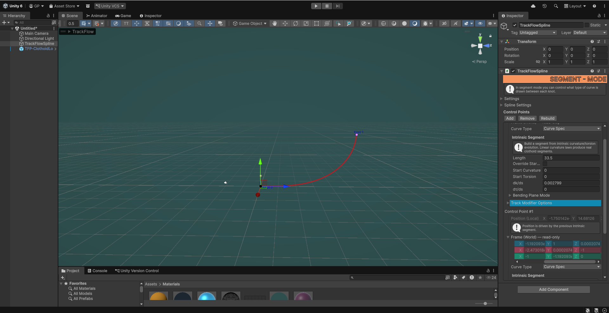
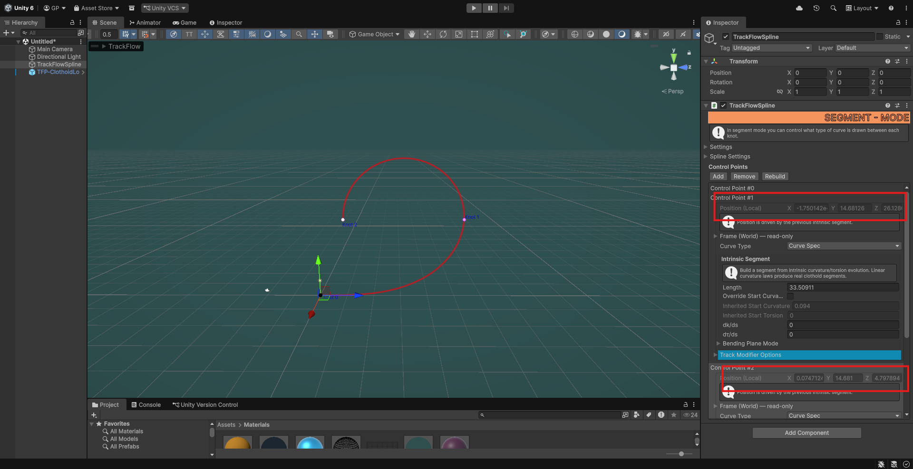
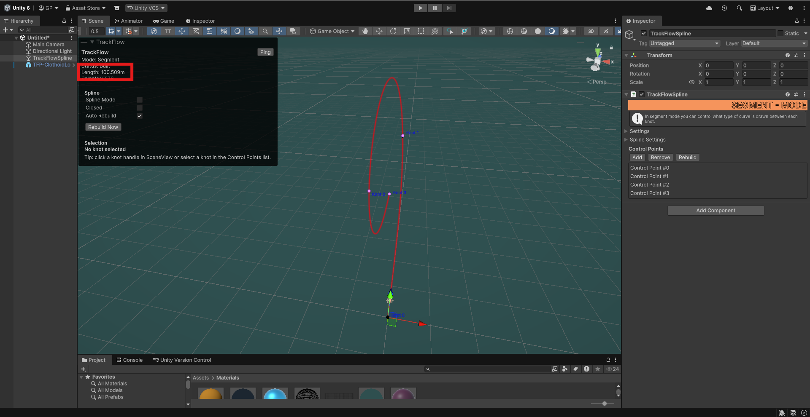
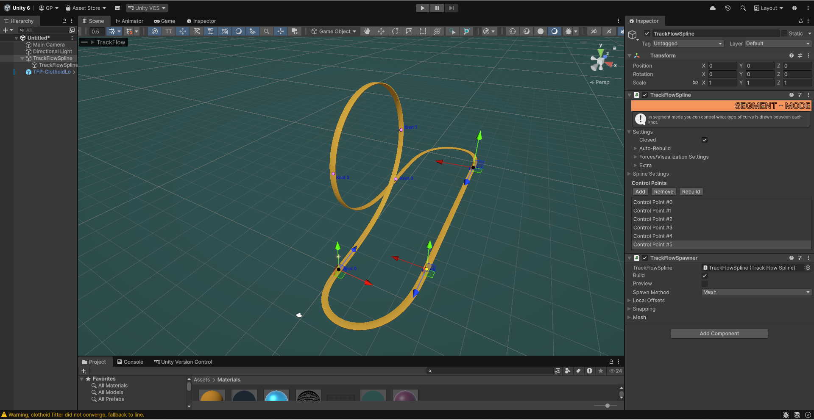

- Generated by
 1.16.1
1.16.1
|
TrackFlow Pro Documentation 1
Generate roller coasters, railroads, conveyors and more with a physics aware spline and meshing system.
|
In TrackFlow Pro you can create geometric curves with intrinsic parameters like curvature, torsion, their derivatives and the segment length. You can also set the bending plane which defines the plane in which curvature will be applied. By default this is set to the XZ plane, which means curvature will apply in that plane. In this section we will go over the basics of using Curve Spec segments to create a clothoid loop. Clothoid curves are used in everyday designs for systems such as roller coaster loops, roadway designs and railway designs. Anywhere that you would want a truly seamless, force minimizing curve transition between two points, clothoids are the way to go.
If you need an interpolating curve, where you can control the position and tangent of both endpoints, you will want to change the curve mode to Segment mode and then change the segments to be Clothoid segments. In this section we will be talking about extrapolating the clothoid with curvature and torsion values.

Start by creating a TrackFlowSpline component. Set it to segment mode by unchecking "Use Spline" in the Spline Settings dropdown in the inspector. Or by expanding the TrackFlowSpline overlay and unchecking "Use Spline" there. Add a single control point and set its curve type to "Curve Spec". Also set the bending plane to "Use Plane Normal Knot Local" and change the plane from <0, 1, 0> to <-1, 0, 0> so that our curvature is relative to the current orientation of the knot, and the curvature plane is in the local Y direction. Also select "Sync Endpoint Display Frame" so that we can roll the mesh along the curve. This setting and bending plane modes are explained below.
If you check this on a Curve Spec knot, then you can roll the extrapolated knot binormal and change the bending plane for the next knot.
Since you have changed the properties of the first knot, all subsequent knots will share the same curve type and bending plane options, so you don't have to set it for each knot. This is somewhat important to alleviate headaches later on while authoring tracks.
Now add a second point. Go back to the first control point and edit the length to see how it gets extrapolated by the parameters of the previous control point. In this context we will call the second knot a "driven" knot, since it is driven by the previous knot parameters. You cannot edit the position or frame of a driven knot, you can only roll the binormal around the tangent if "Sync Endpoint Display Frame" is true.
In general to create clothoid loops it is best to split the process up into a couple of steps. First we will create the clothoid loop with curvature only, then we will add torsion at the end so that the curve is not self intersecting. I found this was the best way unless you know the exact parameters of the curve you want to build offhand.
We will build a clothoid loop with about 100 meters of length from start to end, similar to the one from above. But you can follow this process to create smaller or bigger loops depending on your requirements.
Change the length of the first control point to about a third of the desired curve length. Then change the dk/ds (curvature derivative) parameter until the tangent vector of the driven knot is almost perfectly parallel with the world Y axis.
Now check the binormal of the driven knot, and ensure it is pointing towards the inside of the loop. Do this by holding shift and rotating the green circle until it points towards the center of the loop. You'll want to do this for all the driven knots. Note you can enable rotation snapping for slightly less guess work at this step.

The second segment should have dk/ds = 0, and it will already have an inherited curvature value which is nonzero, meaning it will create a perfect circular segment along the bending plane. Add a third point, then edit the length parameter of the second knot until the third driven knot loops back around to the same Y position.

For the last segment we just want to copy the length and curvature derivative (dk/ds) parameter from the first control point. You'll want the dk/ds parameter to be the negative of the dk/ds of the first knot, and the length to be exactly the same. Add a new point to see that this will undo the curvature inherited by the first segment and create a driven knot at the same Y value position as the first knot. Or at least very close to it.
Now we have a self intersecting clothoid loop, but real coaster tracks don't intersect like this so we need to push the curve out of the bending plane. You can do this by rotating the binormals of each driven knot slightly, but a better method is adding torsion in the first segment and taking it away in the third segment.
Go back to the first control point and add a tiny amount of torsion, in this example we set start torsion to .004.
Now in knot #2, aka the start knot of the third segment, we see it has an inherited torsion value of .004, and we want to make it 0 at the end of the segment. Since torsion is applied along the length, and the final segment length in this example is 33.5, we can simply set dt/ds to -.004/33.5. Type this into the inspector and let the unity editor do the math for you. You can verify that the torsion is 0 at the end knot by checking the inherited torsion value in knot #3, it should now be 0. And the loop should no longer self intersect.

Verify the length in the TrackFlowSpline overlay (above), and if you need to you can play with the lengths and curvature values to find the right size loop for your application. You can also use this method for any other transitional segment. And you can still add interpolated segments after a sequence of curve spec segments. Though there are some drawbacks. Mainly that you cannot close a curve if the final knot is driven by a curve spec. This is easy to overcome by simply adding a short segment after the fact and closing it with any of the other curve types.
